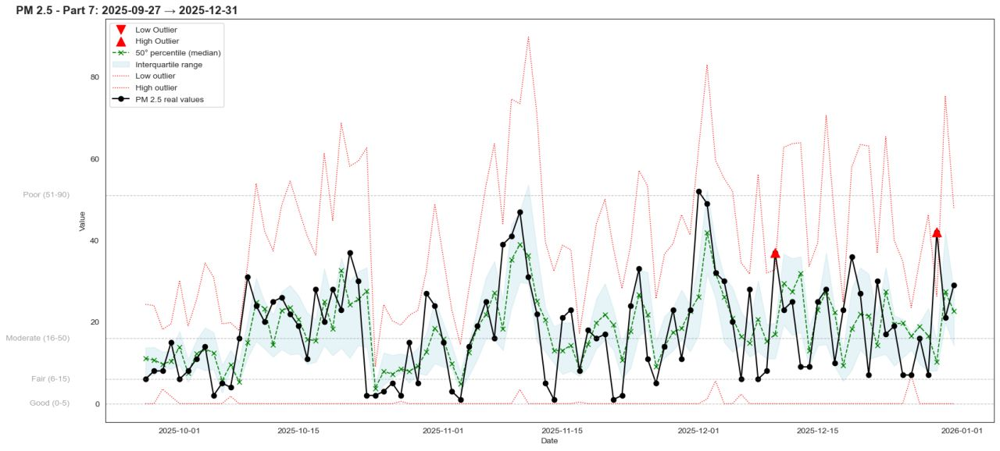

The Air We Breathe
A data science project on air quality in Val Lemme, combining pollutant and meteorological data to model PM2.5 and O₃ dynamics through clustering, quantile regression and SHAP-based interpretation.
Open project →Data Science · AI Systems · Decision Intelligence
Data Scientist & AI/Data Specialist
I work at the intersection of data science, AI and business context, turning complex information into structured analysis, explainable models and decision-ready narratives.
Based in Milan, Italy · Available for projects and collaborations in Italian or English
About
I have a background in enterprise IT, data management and business systems, and I now focus on data science, AI and analytics projects that connect technical depth with business understanding.
My work is not only about building models, dashboards or AI agents. It is about structuring problems, understanding the context behind the data, and making analytical results clear enough to support real decisions.
Selected work
A selection of open projects focused on environmental data science, AI memory and privacy, and automated news intelligence.

A data science project on air quality in Val Lemme, combining pollutant and meteorological data to model PM2.5 and O₃ dynamics through clustering, quantile regression and SHAP-based interpretation.
Open project →
An exploratory project on what users allow ChatGPT to remember, using survey data, semantic clustering, GDPR-oriented classification and network analysis to understand patterns in personal AI memory.
Open project →An automated pipeline that transforms Italian news feeds into a structured press review, combining semantic analysis, concept extraction, graph-based interpretation and LLM-assisted narration.
Open project →How I work
I usually start from the business context, then move to data, modelling and explanation. The goal is not only to build models or dashboards, but to make the result understandable enough to support decisions.
Clarify the problem, the decision to support and the people affected by it.
Understand sources, quality, limits and how the data was generated.
Use analytics, machine learning or AI systems where they add real value.
Translate outputs into clear evidence, uncertainty and practical implications.
Project notes
A compact space for the questions behind the work: why a project was built, what it makes visible and what can be learned from it.
Why forecasting intervals, outliers and explainability matter more than a single predicted value.
What user-provided memories can reveal about privacy, personalization and future AI assistants.
How semantic similarity, keywords and co-occurrences can support a more structured daily press review.
Professional background
Analytics, dashboards, process analysis, machine learning opportunities and improvement projects.
IT and AI strategy, lightweight AI governance, RAG systems and operational data analysis.
Enterprise systems, Power BI, Industry 4.0, segmentation, explainable ML and international IT operations.
Technical stack
Python, pandas, scikit-learn, CatBoost, XGBoost, LightGBM, SHAP, clustering, quantile regression.
LLM APIs, RAG, LangChain, LangGraph, embeddings, transformers, semantic search.
Power BI, Matplotlib, Seaborn, dashboards, data storytelling and executive reporting.
SQL, relational databases, ETL, data quality, Microsoft 365, IT governance, cybersecurity, Industry 4.0.
Education & credentials
Executive Master in Data Science · Rome Business School
Professional Master — Data Science, Big Data & AI for Finance · 24ORE Business School
Bachelor's Degree in Computer Engineering · Università degli Studi di Genova
Additional training · IBM AI Engineering, MIT Professional Education, SDA Bocconi, LSE, Hugging Face and AI agents programs.
Contact
Feel free to reach out.